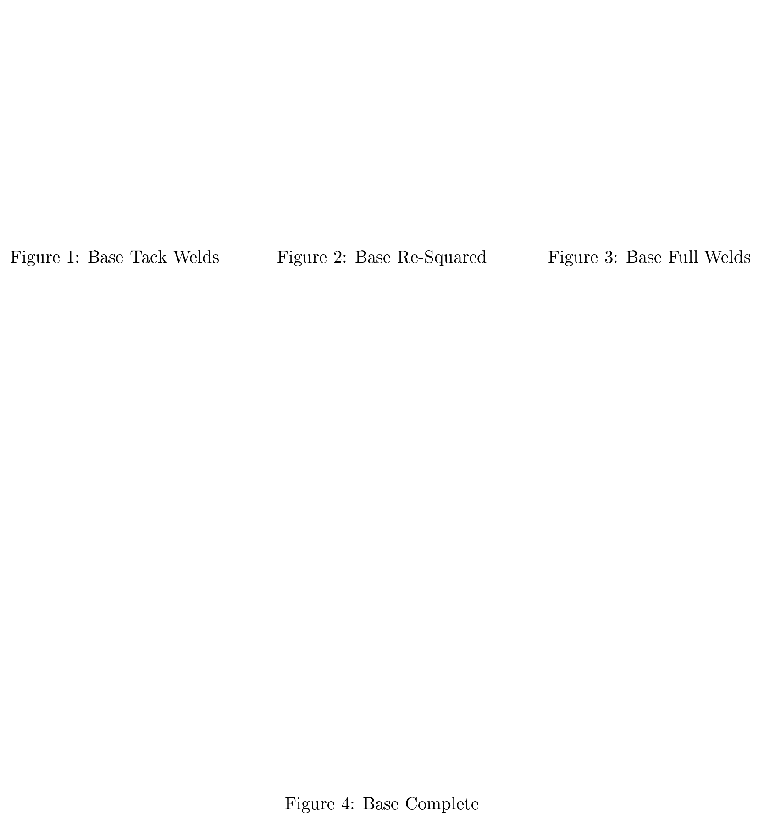

3-Axis CNC - Phase 1
Abstract
Phase 1 of the project consisted of the design, engineering, and construction of the mechanical components for the machine. A CAD model was designed and engineered from scratch and realized in physical form. Phase 1 is now at a temporary completion stage and will resume after the electronic components are installed. Below is an outline of the technical aspects of the design and build process.

Figure 1: CAD Side Plate
Base
A-36 Hot Rolled Steel(HRS) was chosen as the material for the base and structural components. It was chosen over aluminum and other materials because of its rigidity. Forces applied to the cutting bit will be transferred to the structure. Any elastic deformation will cause inaccuracies in the cutting bits actual position relative to it virtual position. Steel elastically deforms much less than aluminum and most other materials which minimizes the inaccuracies. The squareness of the base is critical to the same end. Wedge shims were used to achieve squareness for welding.

Figure 2: Base Shimming
Welding was chosen as the best joining process for the rigid body components as it greatly increases rigidity. Gas Tungsten Arc Welding(GTAW) or Tungsten Inert Gas(TIG) was chosen as the welding process due to the ability to control heat input thus reducing thermal deformation. Metal will contract following thermal input from welding thus slightly deforming the part. Techniques to reduce thermal deformation by distributing the thermal input from welding were also utilized.

Y-Axis Linear Motion
Linear motion components are expensive! For this reason it was necessary to compromise on these components. A design using 0.250" steel square stock rotated 45° on edge and 90° v-bearings was devised. This design features low friction and relatively high accuracy with relatively inexpensive components. High quality hardened v-bearings were chosen due to this being an extreme wear location. The rails will be flame hardened in place.

Figure 3: Y Rails
Positioning of the rails was critical in order to prevent the linear motion components from binding. If the upper rails are not nearly perfectly parallel, within ~0.010" over the 7' span, significant binding will occur preventing the function of the linear rails system. Also, if the upper and lower rails are not nearly perfectly plumb the same will occur. This accuracy was nearly achieved at 0.015". Some honing of the rails will be necessary for smoother motion; however, as is, the rails do not bind significantly.
Figure 4: Y Rails Layout
Gantry
The gantry consists of three main components. The two side plates and the cross beam. The side plates were made from 0.5" A-36 HRS plate and the cross beam from 2" x 4" x 0.125" A-36 HRS square tube with 0.5" plate flanges welded to the ends. It was chosen to join these components together with machine screws rather than fully welding them together to allow for slight final adjustment and ease of construction.

Figure 5: Gantry Side Plate
The side plates were hand cut and thus provided a challenge for laying out the bolt hole patterns as there was no identical square edge shared by both plates. The hole patterns must be very close to identical, specifically the spacing between the threaded holes for the bearing and the cross beam through holes, for the gantry cross beam to remain square with the base. Bolt holes for the X axis stepper motor, pully, and clamps for the Y axis belts were laid out as well.

Figure 6: Eccentric Bearings
Adjustment of the bearings vertical distance is also necessary as wear is inevitable and greater machine life is a critical engineering goal (contrary to evidence observed in most products produced today). To this end eccentric bushings were used to allow adjustment of the bearings over time.

Figure 7: CAD Model
Stepper motor mount, pulley, and belt clamps were constructed and attached.

Figure 8: CAD Model
X-Axis Linear motion
The X axis uses the same rails design as the Y axis.

Figure 9: CAD Model
Carriage
The carriage is similar to the side plates with four bearings and a clamp for the drive belt to attach. The Z axis will be mounted to this carriage.

Figure 10: X Carriage (backside)
Z-Axis
The Z axis was purchased as a unit made by an independent machinist in Canada for less than what it would have cost me for materials! Miracles are real! TODO: Add link…

Figure 11: Z Axis
Drive System
The drive system consists of stepper motors driving GT-2 timing belt around a drive pulley and an idler pulley. The motion components are clamped to the belt between. The drive pulleys were purchased but it was decided to make the idler pulleys as a test of my machinist meddle. Each idler consist of a pulley turned from aluminum, a press fit bearing, and a bushing.

Figure 12: Pulleys
Conclusion
All motion components operate smoothly and the structure is rigid. The next phase will be attaching the electronics.

Figure 13: Full Mechanical Construction